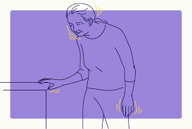

Parkinson's Disease Overview
Key Points About Parkinson's Disease:
Symptoms:
- Motor Symptoms:
- Tremors: Shaking, often starting in one hand, known as resting tremor.
- Bradykinesia: Slowness of movement and reduced ability to initiate voluntary movements.
- Rigidity: Muscle stiffness and resistance to movement in the limbs and trunk.
- Postural Instability: Impaired balance and coordination, leading to frequent falls.
- Non-Motor Symptoms:
- Cognitive Changes: Memory problems, difficulty with executive functions, and in some cases, dementia.
- Mood Disorders: Depression, anxiety, and apathy.
- Autonomic Dysfunction: Problems with blood pressure regulation, sweating, and digestion.
- Sleep Disturbances: Trouble falling asleep, frequent waking, and restless legs.
Diagnosis:
- Clinical Assessment: Diagnosis is primarily based on clinical evaluation of symptoms and medical history. There is no specific test for Parkinson's disease.
- Neuroimaging: MRI or PET scans may be used to rule out other conditions and observe changes in brain structure.
Treatment:
- Medications:
- Levodopa (L-Dopa): Converts to dopamine in the brain to help alleviate motor symptoms.
- Dopamine Agonists: Mimic dopamine effects in the brain.
- MAO-B Inhibitors: Help to preserve existing dopamine levels.
- Surgical Treatments:
- Deep Brain Stimulation (DBS): Implantation of electrodes in specific brain areas to help control symptoms.
- Therapies:
- Physical Therapy: Improves mobility, balance, and strength.
- Occupational Therapy: Assists with daily activities and adaptation strategies.
- Speech Therapy: Helps with communication difficulties and swallowing problems.
Management:
- Lifestyle Adjustments: Regular exercise, a balanced diet, and a structured routine can help manage symptoms.
- Support Services: Support groups, counseling, and educational resources can provide emotional and practical support for patients and caregivers.
Research and Advances:
- Ongoing Research: Efforts are focused on better understanding the disease, developing new treatments, and exploring potential neuroprotective therapies.
- Gene Therapy and Stem Cell Research: Investigating potential for regenerative treatments and personalized medicine approaches.
Living with Parkinson's Disease:
Parkinson's disease requires ongoing management and adaptation to its progressive nature. With appropriate treatment and support, many individuals can maintain a good quality of life and continue to engage in meaningful activities. Early diagnosis and a comprehensive care plan are crucial for effective management of the disease.